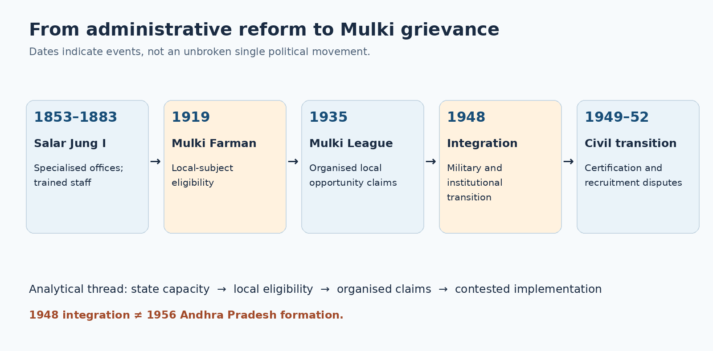
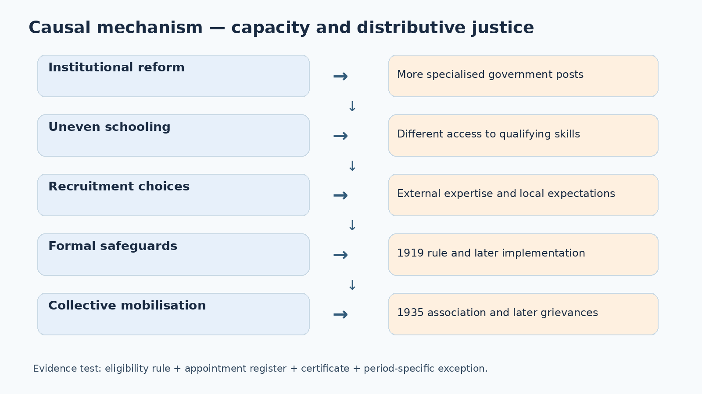
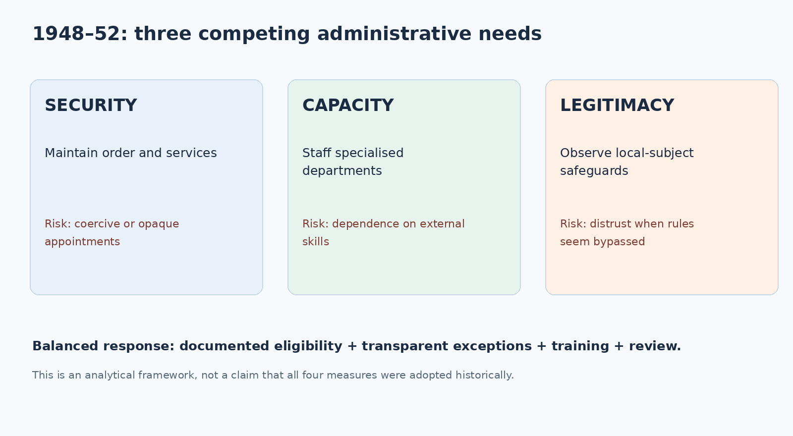

Integrated PDF · Editable master · Preserved original PDF
Status: Published study draft; independent academic approval: NOT GRANTED. Original explanations and practice questions; no unverified question is represented as an official TGPSC PYQ.
Official syllabus, Notification 02/2024, Paper VI, Unit I, Item 1:
Historical Background: Telangana as a distinctive cultural unit in Hyderabad Princely State, its geographical, cultural, socio, political and economic features- People of Telangana- castes, tribes, religion, arts, crafts, languages, dialects, fairs, festivals and important places in Telangana. Administration in Hyderabad Princely State and Administrative Reforms of Salar Jung and Origins of the issue of Mulkis-Non-Mulkis; Employment and Civil Services Rules under Mir Osman Ali Khan, VII Nizam’s Farman of 1919 and Definition of Mulki - Establishment of Nizam’s Subjects League known as the Mulki League 1935 and its Significance; Merger of Hyderabad State into Indian Union in 1948; Employment Policies under Military Rule and Vellodi,1948-1952; Violation of Mulki-Rules and Its Implications.
Scope boundary. This chapter covers the region and princely state, cultural plurality, Salar Jung reforms, 1919 Farman, 1935 Mulki League, 1948 integration and 1948–52 administrative transition. The 1952 agitation and City College episode are reserved for Topic 2 except where needed to show consequences. The 1956 merger is not the same event as 1948 integration.
| Official requirement | Main coverage |
|---|---|
| Telangana distinctive cultural unit; geography and economy | §§ 1–2, 6, 20 |
| Castes, tribes, religions, arts, crafts, languages, dialects, fairs, festivals and places | §§ 3–5, 20 |
| Hyderabad administration; Salar Jung reforms | §§ 6–8, 21 |
| Mulki–non-Mulki origins; service rules; 1919 Farman and definition | §§ 8–10 |
| Nizam's Subjects League / Mulki League, 1935 | § 11 |
| Hyderabad integration into Indian Union, 1948 | § 12 |
| Military and Vellodi administration, 1948–52 | §§ 13–14 |
| Mulki-rule violations and implications | §§ 15–16, 19, 23 |
| Historical evidence and 2026 current affairs | §§ 17–18, source register |
Telangana's regional distinctiveness developed within a multilingual Hyderabad state. Nineteenth-century administrative reforms created specialised public employment, while unequal access to education and the recruitment of outsiders generated concerns about opportunity. The 1919 Mulki rules supplied a formal language of local-subject eligibility, and the 1935 Mulki League organised related claims. Hyderabad's integration into India in 1948 changed political sovereignty but did not settle disputes about certification, staffing and regional fairness. The result was a durable administrative grievance that later movements could articulate politically. The argument requires care: cultural identity is not the same as legal domicile, the 1948 integration is not the 1956 state reorganisation, and allegations of violations require specific evidence.
The first unit of Paper VI begins before the conventional 1969 agitation. Its underlying problem is how a distinct Telangana political consciousness developed from older institutions, identities and claims to fair treatment. An answer that begins abruptly with slogans in 1969 misses the administrative genealogy. Hyderabad was a princely state with Telugu-, Marathi- and Kannada-speaking regions; Telangana was its Telugu-speaking part, not an independent state or a synonym for the entire dominion. A second distinction matters: the Nizam's Hyderabad state before September 1948, the Hyderabad state administered within India after integration, and the Telangana region of Andhra Pradesh after 1956 are different political units. Many examination errors arise from moving a fact from one of these units to another.
A historical explanation requires at least three layers. The first is material: Deccan ecology, tank irrigation, land tenures, unequal access to schooling, urban–rural differences and government employment. The second is institutional: courts, revenue administration, public services, language policy and the legal meaning of domicile. The third is political: people came to interpret recruitment, transfers and language qualifications as questions of belonging, dignity and distributive justice. The layers interact. A modern bureaucracy may offer predictable procedures, but when entry into it requires education unavailable to much of the local population, a formally neutral competition can produce unequal outcomes. Conversely, a local-preference rule may protect opportunity while creating difficult questions about migrants and merit.
Use a disciplined distinction between documented rule, administrative practice, contemporary allegation and later political memory. The 1919 Farman is a legal-historical fact; the precise number of non-local appointments in a given office requires personnel records; the belief that locals were systematically excluded is a political grievance whose strength must be assessed against evidence. None of these categories should be silently converted into another. This chapter therefore follows a causal chain: regional society → state modernisation → recruitment controversy → local-subject definition → collective mobilisation → integration and administrative transition → continuing employment disputes. The 1952 agitation is introduced only as a consequence and a bridge to the next syllabus topic, not treated as the same event as the 1948 integration.
For mains answers, organise the introduction around the political geography, develop each mechanism with a named institution and date, and end with an evaluative conclusion about why public employment became a durable symbol of regional justice. For prelims-style practice, memorise the sequence 1853 (Salar Jung's reform tenure begins), 1919 (Mulki Farman), 1935 (Mulki League), September 1948 (integration), 1949–50 (administrative transition), 1952 (elected ministry and agitation). This is a chronological scaffold, not a substitute for explanation.
Telangana occupies the Deccan plateau, where hard-rock terrain, variable monsoon rainfall and river systems shaped settlement and livelihood. The Godavari and Krishna basins supplied major drainage networks, but river presence did not automatically guarantee canal irrigation for every village. In many districts, tanks, wells and seasonal streams mattered as much as large rivers. Kakatiya-era tank traditions and later local maintenance practices linked agrarian production to collective labour and revenue arrangements. A historically grounded answer distinguishes irrigation potential from the actual distribution of water, credit and land control. It should also avoid applying today's district boundaries to the princely-state period without warning.
The older Hyderabad dominion linked Telangana to Marathwada and the Kannada-speaking districts through a single political and revenue system. Hyderabad city was a metropolitan centre of administration, trade and higher education; interior villages were often dependent on rainfall, local markets and agrarian intermediaries. Cotton, food grains, livestock and forest products circulated through market networks, but commercialisation did not erase indebtedness or unequal landholding. The interaction of state revenue demands, jagirdari and other tenures, moneylenders and village power structures shaped peasant experience. To describe the region as uniformly backward would conceal important urban institutions, crafts and commercial centres; to describe it as prosperous because Hyderabad city had impressive buildings would similarly conceal rural deprivation.
Forests in northern and eastern Telangana supported livelihoods and cultural practices of several Adivasi communities. Access to forests was not merely an ecological issue: state claims over land, extraction and mobility could change customary use and political authority. In a district-level example, the Godavari-adjacent belt offers a useful way to discuss forest livelihoods and the state's regulation of land. The Warangal region offers a contrasting example of agrarian villages, tank systems and craft heritage. Hyderabad–Secunderabad illustrates concentrated administrative and educational opportunity. These are analytical examples, not claims that all residents shared identical occupations.
A recurring examination trap is to assume that a region's geographical distinctiveness itself causes a separate-state movement. Geography conditions institutions and livelihoods; political mobilisation requires grievances to be articulated, organisations to act, and rules to become disputed. Telangana's distinctive experience arose from the interaction of its Deccan environment with Hyderabad's administrative history and the changing distribution of jobs and educational opportunities. The geography should therefore appear as the setting of the argument, not as a deterministic explanation.
The expression “people of Telangana” describes a plural society. Telugu-speaking agricultural and artisan communities lived alongside Urdu-speaking urban groups, Lambada/Banjara communities, Koya, Gond, Chenchu and other Adivasi groups, as well as people connected to Marathi and Kannada cultural zones. Caste, tribe, religion, occupation, gender, literacy and residence intersected. The same administrative reform could benefit a town-educated professional while barely reaching a landless labourer. A strong answer does not collapse these differences into a romantic claim that the region had one undifferentiated culture or a uniform political will.
Caste stratification affected access to land, water, temples, schools and authority. Dominant landholding groups could control local resources, while Dalit communities and occupational groups often experienced exclusion and forms of compulsory or poorly compensated service. Practices such as vetti require careful historical placement: they were part of broader relations of agrarian coercion, not an inevitable characteristic of every Telangana village. Social reformers and associations challenged humiliation and unequal opportunity. An analytical account should ask who spoke for the region, whose grievances became prominent, and which voices were less visible in formal petitions.
Adivasi histories must be treated as political histories rather than decorative folklore. The Koya-linked Sammakka–Sarakka tradition, for example, is remembered in the Medaram gathering and in narratives of resistance. Those narratives are culturally significant, but legends about their precise medieval circumstances are not equivalent to contemporary documentary records. Lambada/Banjara embroidery and oral traditions show mobility and artisanal skill; Gond and other communities maintained languages and local knowledge. Forest administration and land alienation could generate conflicts quite distinct from the urban public-service question. These distinct experiences later intersected with Telangana identity without becoming identical.
Religious diversity included Hindu traditions, Islam, Christianity and local forms of worship. Hyderabad's Indo-Persian and Deccani cultural forms coexisted with Telugu literary and village traditions. The government's description of “Ganga-Jamuna Tehzeeb” usefully captures an ideal of composite culture, but an ideal should not be mistaken for proof that social or communal tensions never existed. In a balanced mains answer, use pluralism as a historical pattern, note the unequal distribution of social power, and explain how an inclusive regional identity could be built through shared claims to institutions rather than through a single caste, language register or faith.
Telangana Telugu has vocabulary, phonology and idioms shaped by the Deccan's long multilingual history. Urdu and Dakhni developed strong urban presence, while Marathi, Kannada and Adivasi languages connected communities to neighbouring regions. A dialect is not a defective version of a “standard” language. Treating Telangana speech as culturally inferior was one way linguistic hierarchy could become a matter of dignity. Yet it is equally inaccurate to assume every resident spoke the same dialect or that Urdu was confined to one religious community.
Language operated simultaneously as cultural inheritance and an institutional gatekeeper. Under the Asaf Jahi administration, Urdu was important in official and educational life, particularly in the twentieth century. Osmania University became notable for higher education through Urdu, an important project of vernacular modernity in its own terms. However, language requirements and the unequal distribution of secondary schooling could disadvantage applicants who had not followed the requisite educational pathway. After integration, the greater use of English and regional mother tongues created new opportunities but also required trained teachers and administrators. Recruitment from outside the former princely state was defended partly as a response to personnel shortages; local candidates perceived it as an erosion of promised safeguards.
A good causal account does not say “Urdu caused unemployment” or “English automatically solved it.” It asks which institutions offered schooling, what qualifications were required for particular jobs, how language transitions were implemented and who could adapt. The distinction between language of governance, medium of instruction and spoken language is essential. An officer might speak Telugu at home, study in English and work through Urdu files. Each language performs a different function; the employment consequence depends on the formal rule and the applicant pool.
For an applied example, imagine a 1950 district office changing its correspondence system. Training existing clerks preserves institutional memory but takes time; hiring already-trained staff speeds transition but may displace locals. A fair policy could combine transitional training, clear eligibility criteria, transparent vacancy data and a review of domicile rules. This illustrates why administrative efficiency and regional equity are not always mutually exclusive but must be designed together. The syllabus tests the historical tension, not merely the names of languages.
Bathukamma, Bonalu, the Sammakka–Sarakka gathering at Medaram, Muharram/Peerla Panduga, Ramzan celebrations and other festivals demonstrate Telangana's varied religious and social practices. Bathukamma centres on seasonal flowers, women's collective participation and songs that can carry local histories. Bonalu is associated with worship of forms of the Mother Goddess and neighbourhood processions. Medaram is especially important for Adivasi memory and collective identity. These practices should not be presented as invented only after state formation: their roots precede the contemporary state, although public sponsorship, scale and media visibility have changed over time.
Chindu Bhagavatam, Oggu Katha, Burrakatha and other oral-performance traditions transmit narratives through music, storytelling and movement. Some forms are associated with particular communities and ritual settings; an account that calls them generic “folk dance” erases their social organisation. Urban Qawwali, Ghazal and Mushaira traditions reflect Hyderabad's literary world. Crafts include Pochampally ikat, Gadwal textiles, Nirmal painting and toys, Cheriyal scroll painting, Bidri inlay and Banjara needlework. Each has a different technique, market history and geographic association. Bidri takes its name from Bidar, now in Karnataka but historically linked to the Deccan; it should not be casually assigned to a modern Telangana district.
Places serve as historical evidence rather than tourist decoration. Warangal's Kakatiya remains, the Ramappa temple, Golconda Fort, Charminar, Chowmahalla Palace and the Musi river corridor reveal different political and architectural layers. Heritage structures may illuminate patronage, engineering, trade and religious life, but they cannot alone establish how fairly a government recruited clerks. To connect culture with the Mulki issue, explain that a regional public identity could be articulated through language, performance and historical memory while the immediate conflict concerned access to employment.
A contemporary comparison illustrates continuity and change. Telangana's Tourism Policy 2025–2030 explicitly seeks to promote Bathukamma and Medaram, while the state government's September 17, 2026 observance frames 1948 through present-day democratic aspirations. These are current policy and commemorative interpretations, not direct evidence of what every resident believed in 1935 or 1948. The methodological lesson is to use present-day government material to document present policy, and historical material to reconstruct historical causation.
Hyderabad was ruled by the Asaf Jahi dynasty within the framework of British paramountcy before 1947. The Nizam exercised internal authority but did not possess the external sovereignty of an independent modern nation-state. A resident, subsidiary arrangements and British strategic interests influenced the state's political choices. The dominion contained directly administered areas and varied land tenures, including jagir holdings. Administration therefore cannot be described as one uniform village-to-capital chain without recognising the intermediaries and exemptions that shaped taxation and justice.
The Nizam's government drew revenue, managed public order, patronised institutions and employed officers in a complex hierarchy. Revenue collection was a core concern because it funded military, court and civil expenditure. Where intermediaries held coercive power, peasant experience could differ sharply from the official administrative ideal. Some public institutions, such as Osmania University and modern departments, were impressive; social indicators and access remained uneven. Modernisation and inequality coexisted. An excellent answer explains the mechanism rather than merely praising or condemning the regime.
The state's relationship to the wider Indian economy was substantial: traders, students and professionals moved across borders. Administrators sometimes recruited outsiders who had English education or technical expertise. This was not in itself unlawful under every period's rules; the controversy sharpened when recruitment practices seemed inconsistent with safeguards or when local aspirants lacked access to the credentials demanded. The public-service question thus emerged at the intersection of state-building, education and mobility. A government seeking trained officials may face a real shortage, yet it also has a duty to build local capacity.
Avoid projecting the present constitutional framework backwards. The pre-1948 Nizam's Farmans were instruments of princely authority, not statutes enacted by the post-1950 Indian Parliament. After integration, continuity and modification of service rules raised distinct legal questions. Similarly, the later Article 371D framework is a separate constitutional response to subsequent regional disputes; it must not be treated as the source of the 1919 Mulki definition. Keeping these legal periods separate is central to accurate Paper VI answers.
Mir Turab Ali Khan, Salar Jung I, served as Diwan from 1853 to 1883. His reforms sought a more stable treasury and an administration capable of dealing with internal disorder and external pressures. Revenue reorganisation curtailed older tax-farming practices and developed salaried officials and territorial jurisdictions. Police and judicial functions were increasingly differentiated from revenue authority. Education, public works, communication and specialised offices received attention. The Telangana government's Socio Economic Outlook 2017 provides a valuable official historical overview of these reforms and the expansion of state schooling and technical instruction.
The reforms should be evaluated along four dimensions. First, fiscal regularity: direct or more accountable collection could increase state revenue and reduce some intermediaries' discretion. Second, functional differentiation: specialised departments offered clearer responsibility than a single official combining revenue, policing and adjudication. Third, professional competence: trained personnel and written procedures could improve records and infrastructure. Fourth, social reach: a reformed bureaucracy did not automatically distribute its benefits equally to women, rural poor, Dalits or Adivasi communities. Fiscal success is not the same as popular welfare.
The recruitment dilemma is crucial. To staff newly differentiated departments, Salar Jung drew on educated professionals from beyond Hyderabad, including northern India. Such officials brought skills and sometimes networks that made further recruitment easier. Local elites could resent perceived displacement, particularly when they saw outsiders occupy influential posts. Yet it would be misleading to claim that every outsider was incompetent or that every local candidate was excluded. The issue was the structural imbalance between an expanding bureaucracy's requirements and the state's educational pipeline. The later Mulki–non-Mulki question arose from this institutional environment.
A useful comparison is a contemporary district government introducing digital land records. It can recruit specialists from elsewhere to build the system quickly; without local training, maintenance capacity and transparent hiring, however, temporary expertise may become permanent dependence. Salar Jung's case illustrates the general state-building problem: capacity imported to accelerate modernisation can generate a political demand for locally rooted participation. The exam expects both the administrative achievement and the unintended distributive consequence.
“Mulki” broadly designated a recognised local subject of Hyderabad under applicable rules; “non-Mulki” or “gair-Mulki” designated a person without that status. The terms were administrative and political categories, not names of religions or castes. A Telugu speaker born outside Hyderabad might be non-Mulki; an Urdu speaker meeting the state's residence conditions could be Mulki. Confusing ethnicity with legal status produces faulty answers and encourages an inaccurate communal reading of the dispute.
The controversy grew because government service provided salary, security, prestige and access to state power. A post in revenue or education could shape village life and influence recruitment of subordinates. As offices professionalised, educational credentials and language competence became decisive. Locals argued that outsiders had advantages in training, networks or administrative patronage. Outsiders and their defenders could argue that expertise was necessary and that employment should not be closed on birthplace alone. Both positions become analytically intelligible once one distinguishes the short-run staffing need from the long-run obligation to develop local capacity.
Three kinds of evidence should be separated. A normative rule states who is eligible; an appointment register records who was hired; an agitation petition records how a group perceived the process. Violations cannot be established solely by citing a petition. Conversely, the existence of a protective rule does not prove effective implementation. A well-constructed answer will show the rule, the alleged or documented practice, and the political reaction as successive steps. It will also distinguish the grievance about recruitment from later debates about allocation of public expenditure and irrigation.
The label “sons of the soil” can be helpful shorthand, but it obscures how Hyderabad's political boundaries included multiple linguistic communities. A local-subject definition could encompass residents across Telangana, Marathwada and the Kannada districts. Regional Telangana identity and Hyderabad-state domicile were overlapping, not identical. This distinction helps explain why a rule intended to protect the old state's subjects did not automatically settle later Telangana-specific claims after reorganisation. It is the key conceptual bridge between the 1919 legal category and the subsequent political movement.
Mir Osman Ali Khan, the seventh Nizam, ruled during a period of expanding educational and administrative institutions. The 1919 Farman gave formal expression to Mulki qualifications in public employment. The directly examined Supreme Court decision in The Director of Industries & Commerce v. V. Venkata Reddy (3 October 1972) reproduces relevant Mulki provisions and explains their later constitutional treatment [S07]. This replaces an incorrect reference to High Court of Andhra Pradesh v. V. S. Krishnamurthy (1978), which concerned the jurisdiction of the Andhra Pradesh Administrative Tribunal and is not authority for the historical fifteen-year residence rule.
Read the actual alternatives, not a slogan. In the rules reproduced by the 1972 judgment, Rule 1 lists separate historical routes to Mulki recognition: birth as a Hyderabad subject; entitlement by residence; a father in government service at the applicant's birth after completing fifteen years' service; and, in the original wording, a wife of a Mulki. Rule 3 elaborates the residence route: at least fifteen years of permanent residence, abandonment of an intention to return to a previous home, and a prescribed affidavit attested by a magistrate. Therefore, fifteen years was not the only textual route in the pre-Constitution rules, and it would be incorrect to apply each old route unchanged after 1950. The gendered spousal provision is reported as historical legal text, not endorsed as a present-day eligibility norm. [S07]
Constitutional transition changes the answer. The Hyderabad government's circular of 14 June 1950, quoted in the 1972 judgment, directed that birth- and descent-based qualifications be put out of operation insofar as inconsistent with the Constitution, while Article 35(b) preserved the permissible residence-based requirement. The circular of 18 September 1951 clarified that the fifteen-year residence period was continuous, while temporary absences for education or medical treatment did not break continuity where permanent residence remained. These are distinct dated administrative clarifications, not fresh Farmans of 1919. A mains answer should explain the 1919 rule, the 1950 constitutional adjustment and the 1951 continuity clarification separately. The 1972 court decision later held the relevant residence provisions had survived constitutional transition and the 1956 reorganisation; that retrospective ruling must not be misdated as an event of 1948–52. [S07]
The broad idea of the rule was to distinguish recognised Hyderabad subjects from other applicants and regulate their eligibility for specified state service. Birth, residence and intention to settle could matter under the historical definition, while official certification became an administrative mechanism. A candidate should not invent a precise list of exemptions or procedural clauses from memory. In particular, “fifteen years of residence” should be stated as a key historical condition, not as a universal rule that every applicant for every post in every decade satisfied identically. The category and its enforcement changed with later instruments and legal interpretation.
The Farman had a double significance. Legally, it supplied a formal vocabulary for claims about recruitment. Politically, it gave petitioners a promise against which appointments could be judged. A complaint about non-local officers now could be framed not merely as preference but as failure to observe an existing rule. Yet enforcement depended on verification of certificates, departmental exceptions, vacancies and disciplinary capacity. An official could comply in form while undermining the purpose through questionable certificates or expansive exceptions. A legal safeguard without transparent records is vulnerable to such gaps.
Consider a hypothetical recruitment: one applicant has lived in Hyderabad for sixteen years and can document residence; another has lived there for three years but holds a scarce engineering qualification. The administration must first determine whether the relevant post and period are governed by the rule, not immediately assume one applicant has an absolute claim. If an exception is allowed, it should be recorded and justified. This case makes clear that a domicile rule is a legal eligibility framework, not a blanket moral judgement about the competence of individuals.
A local-subject rule works only if the state can verify the facts on which it depends. Residence may be evidenced by school records, land or municipal documents, service history and certificates; the evidentiary standards are historically contingent. Administrative discretion over certificates creates two symmetrical risks. Genuine locals may be denied recognition because records are incomplete, while ineligible applicants may obtain recognition through error, influence or fraud. Both undermine confidence in the system. In a rural society with low literacy and uneven records, the documentation burden itself could be unequal.
To analyse implementation, distinguish eligibility, selection and posting. Eligibility decides who may compete; selection decides who is chosen; posting determines where a selected officer serves. A rule protecting eligibility may be weakened if authorities create large exempt categories or make temporary appointments permanent without review. Transfers may also create the perception of displacement even when they are lawful. Therefore, a claim that a department violated Mulki rules requires a date, a named rule, the class of post and evidence of appointment or certification. A general statement that “all non-locals were illegal” is analytically unsound.
The 1949 Hyderabad Civil Services Regulation, described in historical accounts as modifying or reaffirming the 1919 framework, is important because it shows that the local-subject issue survived integration. A new political authority did not automatically erase older administrative commitments. The transition also created a practical challenge: replacing or retraining officials while maintaining law and order and essential services. When new recruits were drawn from outside the former state, locals could interpret the practice as violating both the letter and spirit of protection. Conversely, officials might defend recruitment by pointing to urgent shortages and changing working languages.
An exam answer should offer an institutional remedy rather than a slogan: publish vacancies and eligibility rules, verify certificates independently, maintain disaggregated recruitment data, specify temporary exceptions, provide training for local candidates and create an appeal mechanism. These measures do not establish what the 1949 government actually did in every department; they are an analytical framework for evaluating the historical problem. The essential point is that the existence of a Farman, a later regulation and an agitation demonstrates a continuing gap between legal promises and public trust.
The Nizam's Subjects League, commonly referred to as the Mulki League, was established in 1935. Its importance lies in the shift from dispersed complaints about individual appointments to organised claims on behalf of recognised subjects of Hyderabad. It supplied a language of belonging and an organisational setting in which educated sections could press for opportunities. The term “subjects” is historically revealing: it reflected the princely-state political vocabulary rather than the post-1950 constitutional language of citizenship.
The League should not be treated as a Telangana statehood party. Its geographical frame was Hyderabad State, encompassing more than the Telugu-speaking region. Nor should it be equated automatically with a modern political party contesting universal-franchise elections. The historical significance is the organisation of local preference and the claim that the state's own people should receive a fair share of public service. This helps explain continuity between pre-1948 grievances and post-integration disputes without asserting that the political goals remained identical across decades.
A careful evaluation asks whose interests the League represented. Government jobs were especially salient to the educated classes, while peasants, artisans and Adivasi communities often had different immediate concerns. Local-subject rhetoric could potentially unite groups across language and religion, but it could also privilege those already positioned to compete for state employment. Its political legacy therefore has to be read alongside wider social reform and agrarian struggles rather than as the single origin of Telangana consciousness.
For a mains answer, place 1935 between the 1919 Farman and the 1948 integration. Explain the sequence: formal rule creates a recognised category; implementation disputes create grievances; association converts grievance into collective representation; administrative transition after 1948 tests whether the promise survives. The significance is organisational continuity and political vocabulary, not a claim that the League itself achieved a separate Telangana state or resolved recruitment inequalities.
When British paramountcy ended in 1947, Hyderabad's ruler sought to preserve a distinct position rather than immediately accede to the Indian Union. The November 1947 Standstill Agreement attempted to manage relations while negotiations continued. The situation was not a simple bilateral constitutional debate. The Razakar militia associated with Qasim Razvi used coercion, while the Telangana peasant armed struggle challenged landlord and state power in parts of the region. Different groups experienced the crisis differently. Accounts that mention only diplomacy or only military action conceal these overlapping conflicts.
The Indian military operation, code-named Operation Polo, began on 13 September 1948. Hyderabad's resistance ended within days, with 17 September commonly marked as the decisive date of integration. Precise sequences of announcements, surrender and assumption of military authority are sometimes given differently in commemorative narratives; avoid treating a single ceremonial date as a substitute for the whole legal and military transition. The political consequence was incorporation into the Indian Union and the end of Hyderabad's attempt to remain separate.
Historical interpretation of 1948 is contested. One narrative emphasises liberation from autocratic rule and Razakar violence; another stresses the costs of military intervention and communal violence during and after the operation. These perspectives are not interchangeable claims about every individual, and a scholarly answer should neither deny coercion by Razakars nor erase violence against civilians during the transition. The Sunderlal inquiry is relevant to the latter debate, but casualty estimates should not be asserted as undisputed figures without identifying the report and its evidentiary limitations.
The public-service dimension is often neglected. Integration changed the governing authority, personnel needs, language practices and the legal environment in which earlier Farmans operated. Local residents could welcome the end of princely rule while opposing employment decisions made by the new administration. This is not a contradiction: support for integration and demand for regional safeguards answer different questions. A strong Paper VI conclusion will show that 1948 settled the state's relationship to India but did not settle who would benefit from the reorganisation of its administration.
Major General J. N. Chaudhuri headed the military administration after the September 1948 operation. Its immediate tasks included restoring public order, managing disarmament and integrating the former princely state's administrative machinery. Governance during such a transition is difficult: existing officers may be distrusted, records may be incomplete, and the centre may seek officials familiar with Indian administrative systems. These constraints help explain why external personnel were recruited, but they do not prove that every appointment complied with local-subject safeguards.
Military administration differed from the previous princely regime in its chain of command and political legitimacy, but institutional continuity remained necessary. Revenue offices, police stations, schools and courts could not simply stop functioning. Personnel choices therefore had consequences far beyond a symbolic contest over jobs. Replacing a local official might disrupt language and community knowledge; retaining an official associated with past repression might undermine trust. There was no frictionless solution. The important analytical issue is whether the administration treated local training and transparent eligibility as central goals or secondary inconveniences.
The 1949 rearticulation of Mulki-related service rules is evidence that the matter was not forgotten. Yet rules could be undermined through exceptions, temporary recruitment and certification problems. Students should distinguish an allegation of widespread violation from an independently verified count. Where numerical claims appear in later accounts, check the office, time window and original register before repeating them. The exam rewards understanding the institutional mechanism more than a dramatic but weakly sourced number.
One useful framework is a three-column evaluation: security need (maintain order and essential functions), capacity need (staff technically competent departments), and legitimacy need (protect lawful expectations of local subjects). Policies that satisfy only the first two may generate long-term political costs. Hyderabad's transition illustrates why administrative modernisation without visible fairness can deepen regional mistrust. The period is best treated as the beginning of a new phase of the Mulki dispute, not as its creation from nothing.
M. K. Vellodi, an Indian Civil Service officer, led the appointed civilian administration during the transition to elected government. The military-to-civil change occurred around the end of 1949, while 26 January 1950 marked the constitutional transformation of Hyderabad into a Part B state under the Indian Constitution. Sources sometimes give different dates for the formal start of the civilian administration and for Vellodi's title; an accurate answer separates the handover, constitutional commencement and subsequent elected ministry rather than compressing them into one event.
Civil administration faced simultaneous tasks: implementing new constitutional institutions, integrating services, changing education and language arrangements, and maintaining routine public functions. Recruitment of personnel familiar with English or regional-language administration could be defended on operational grounds. Local aspirants, however, saw employment as an entitlement protected by earlier rules and as a means of participating in the new order. When certificates or exceptions were perceived as manipulated, the issue acquired moral force. The Vellodi period thus illustrates the difference between a new constitutional framework and continuity of unresolved administrative grievances.
The period should not be described as fully democratic self-government simply because military rule ended. Vellodi's ministry was appointed, not the product of the 1952 electoral mandate. The first elected government under Burgula Ramakrishna Rao belongs to the next topic in the syllabus. Likewise, the later 1956 reorganisation into Andhra Pradesh is not part of the 1948–52 administration, although it shaped the subsequent consequences of local-subject disputes.
A strong answer weighs the central government's imperative to stabilise a large multilingual state against the demand that Hyderabad's residents should not be excluded from its services. The problem was aggravated by educational and linguistic transition. The policy alternative was not necessarily “no outside experts”; it could be time-bound external recruitment paired with local capacity building and credible enforcement of eligibility. This balanced reasoning avoids both romanticising the old regime and assuming that post-integration appointments were inherently fair.
The syllabus specifically asks about violations and their implications. Start by defining what a violation would mean: appointment or regularisation contrary to the governing rule, improper grant of Mulki status, or use of an exception beyond its lawful scope. Do not equate all interregional mobility with violation. Nor should a later politician's assertion be treated as a complete audit of personnel records. The historical grievance concerned the perception—and in some contexts documented disputes—that non-Mulkis obtained positions despite protective rules. Its significance lies partly in the administrative facts and partly in the collapse of public confidence.
The consequences operated at several levels. Economically, government employment represented a scarce channel of upward mobility for educated families. Institutionally, perceived non-compliance reduced trust in certification and recruitment systems. Culturally, language changes and the status of Telangana speech could intensify the sense that local knowledge was undervalued. Politically, employment disputes offered a concrete and communicable demand around which students and associations could mobilise. A grievance about vacancies was therefore capable of becoming a question of regional dignity and representation.
The 1952 Mulki agitation, discussed fully in the next syllabus topic, demonstrates how these pressures surfaced after the appointed administration. Its presence in this chapter should be limited to showing continuity: grievances persisted through military rule, civilian administration and into the elected period. Later controversies about safeguards after the 1956 formation of Andhra Pradesh similarly draw on this history but have their own legal instruments and political contexts. A precise chronology protects against presenting all Telangana movements as one uninterrupted protest.
Evaluation must include a counterpoint. Governments sometimes require specialised staff urgently; equal access to public jobs cannot be reduced to exclusion by origin alone. Nevertheless, such needs should be openly justified and accompanied by training and safeguards, because opaque exceptions invite suspicion. The central lesson is that formal guarantees matter only when implementation is measurable and contestable. In Telangana's political history, the distance between a recognised Mulki rule and disputed recruitment practice helped convert an administrative issue into an enduring regional political question.
A useful causal map begins with the multilingual Hyderabad dominion and its uneven educational geography. Salar Jung's administrative reforms expanded specialised state employment and encouraged recruitment of trained officials, including outsiders. The resulting competition made local-subject status politically important. The 1919 Farman formalised eligibility and the 1935 Mulki League organised the demand for local opportunity. The 1948 integration then transformed the political authority while leaving the practical question of staffing unresolved. Military and Vellodi administrations recruited during an unsettled transition; disputes over Mulki compliance continued. The causal chain is historical, not mechanical: each link requires evidence and could have developed differently.
Consider three counterfactuals. If the state had rapidly expanded schooling for local candidates, the gap between formal eligibility and competitive qualifications might have narrowed. If all appointments and exemptions had been transparently published, perceptions of unfairness might have been easier to test and correct. If political associations had failed to connect employment grievances to shared regional identity, the issue might have remained a narrower service dispute. Counterfactuals are analytical devices, not claims that these reforms were historically adopted. They show why institutional design and political organisation both matter.
This causal approach also exposes common false binaries. “Modernisation versus tradition” is inadequate because local claimants often demanded access to modern government jobs. “Telugu versus Urdu” is inadequate because Mulki status was not simply linguistic. “Integration versus regional identity” is inadequate because one could support Indian integration while demanding local safeguards. “Local rights versus competence” is inadequate because a training programme can improve both. A well-balanced answer avoids selecting one binary as the whole story.
Use the diagram in the companion materials to rehearse a structured mains answer. Introduce the state context; explain reform and recruitment; define the 1919 rule; identify the 1935 organisational moment; analyse 1948–52 transition; evaluate violations and consequences; conclude with the principle that durable political legitimacy requires both administrative capability and credible distributive fairness. This is more explanatory than a bare timeline and more defensible than treating political slogans as self-evident historical proof.
Different source genres answer different questions. The TGPSC Notification 02/2024 authenticates the examination syllabus, not every historical claim. Telangana's official cultural portal and tourism pages document how the present government describes traditions; they are not contemporary witnesses to nineteenth-century employment disputes. The Socio Economic Outlook 2017 supplies an official secondary account of Salar Jung's reforms. Telangana Open School political-science material supplies textbook-level synthesis. Judicial opinions can establish how courts later understood legal instruments such as the 1919 Farman, but a 1978 judgment should not be mistaken for a verbatim transcript of the 1919 court or administration.
A strong evidence audit records the date of publication, the date of access, the exact claim supported and any limitation. For the September 2026 Praja Palana commemoration, the correct inference is that the current Telangana government uses 17 September as a moment of public memory and policy messaging. It does not follow that the same phrase was used in 1948. For a festival page, the correct inference is that a practice remains prominent in the region; a legend about its origin should be labelled a tradition unless corroborated independently. For a legal judgment, distinguish the court's holding from its background summary.
Historical controversies require proportional treatment. Accounts of Razakar coercion and of communal violence associated with the 1948 transition both deserve investigation. Their documentation, time frame and victims differ. Avoid both partisan erasure and unsupported numerical precision. Similarly, avoid claiming that all non-Mulki recruitment was fraudulent. A useful answer identifies competing explanations—administrative shortages, uneven educational opportunity, patronage, weak certificate checks—and states what evidence would distinguish them.
No question in this chapter is labelled an “official previous-year question” without a verified original paper and question number. The practice MCQs and mains prompts are newly authored learning exercises. The academic audit remains pending; publication, word count and file integrity cannot establish historical correctness. Before examination use, independently check exact legal definitions, dates of administrative handovers, and any disputed claims against archival sources and reliable scholarship. This chapter therefore teaches not only facts but also how to avoid overclaiming.
The present Telangana state was created in 2014, long after the 1919 Farman, the 1935 Mulki League and the 1948 integration. Contemporary debates about recruitment, regional equity and language have historical resonance, but their legal frameworks differ. The constitutional mechanisms associated with Andhra Pradesh's later regional arrangements, including Article 371D, should not be retroactively treated as provisions of the Nizam's service rules. A responsible student can identify continuity in political concerns without claiming uninterrupted legal identity.
The Telangana government's September 17, 2026 Praja Palana Dinotsavam statement is a dated contemporary example. It emphasises participation, social justice and public services, using the historical anniversary to frame present governance. Telangana Tourism Policy 2025–2030 similarly treats festivals and heritage as public cultural assets. These sources illustrate how historical memory is curated in the present. They do not prove that modern policy programmes originated in the nineteenth century, and they should be introduced as a separate current-affairs box rather than inserted into the 1948 narrative as if contemporaneous.
The most useful synthesis has three propositions. First, Telangana's distinctiveness was cultural and socio-economic, but it emerged within a wider multilingual Hyderabad polity; a distinct cultural region was not automatically a separate political state. Second, Salar Jung's modernising reforms and subsequent service rules created both administrative capacity and disputes over the distribution of its benefits. Third, integration into India altered sovereignty but did not immediately settle questions of local opportunity, certification and recruitment. The Mulki controversy survived because it joined an enforceable-sounding legal promise to lived perceptions of exclusion.
For the mains, close with an evaluative statement: the historical roots of Telangana mobilisation cannot be reduced either to language alone or to a single protest. They lie in the interaction of social diversity, administrative modernisation, unequal access to education, local-subject rules and the legitimacy of their enforcement. For revision, remember the chronological spine and the analytical distinctions: Hyderabad state versus Telangana region; Mulki status versus language identity; rule versus implementation; integration versus democratisation; contemporary commemoration versus primary historical evidence. These distinctions are the best defence against superficial answers.
Imagine a teacher trained in Warangal under an Urdu-medium system who applies for a government school vacancy in 1950. The post now requires proficiency in a different instructional language. An applicant from a neighbouring province has that proficiency but lacks the historical residence requirement. The problem is not solved by declaring one candidate inherently deserving. A historically responsible analysis first asks whether the post is covered by the Mulki rules, whether the applicant can prove status, whether an authorised temporary exception exists and what transition training was available. Without these facts, a claim of illegality would be premature.
The first stakeholder is the local candidate, whose investment in the state's earlier education system may suddenly be devalued. The second is the schoolchildren, who need competent instruction without prolonged vacancies. The third is the district administration, which must maintain services and apply legal rules. The fourth is the non-local applicant, who should be treated fairly under whatever law actually governs the vacancy. The fifth is the broader public, which needs confidence that recruitment is not determined by patronage or forged documents. These stakeholders have partly conflicting interests, and a single slogan cannot rank them.
A defensible policy design would publish eligibility criteria before recruitment, provide an accelerated training route for local teachers, use temporary appointments only where lawfully authorised, and subject certificates to independent review. Such a design does not imply that Hyderabad's administrators adopted these measures; it shows what would have addressed the underlying tension. In an examination answer, use this case to demonstrate why employment disputes could spread from individual appointments to the legitimacy of the state. A vacancy is a concrete resource; the interpretation of its allocation becomes a political claim about belonging.
The counterargument is that rapid educational expansion after integration required skills not immediately available locally. Acknowledge this practical difficulty without allowing it to erase statutory safeguards. A government can reasonably seek capacity and still be accountable for the route it takes. The case also clarifies a temporal distinction: 1950's administrative transition was not the same as the elected government's response to the 1952 agitation. The consequences connect them, but the actors and institutional contexts differ.
A Hyderabad city clerk and a forest-dependent household in the Adilabad–Godavari belt inhabited the same wider political system but encountered state power differently. The clerk might interact daily with departmental language, promotions, certificates and service rules. The forest household might encounter forest boundaries, revenue claims, policing, land access and market intermediaries. Both could experience exclusion, yet a Mulki certificate would not automatically solve forest-rights grievances, and a change in forest regulation would not necessarily improve civil-service recruitment. A regional history must retain these distinctions.
Hyderabad's administrative concentration created opportunities for some residents while exposing the unequal distribution of schools and professional networks. Urban culture included Urdu literary institutions, crafts, commerce and civic spaces. In the northern and eastern districts, Adivasi languages, shifting ecological conditions and local governance institutions shaped political life. The diversity matters for causation: later regional movements could connect different grievances through a common demand for dignity and fair access, but this was political work, not an automatic consequence of shared geography.
For historical interpretation, use three levels of comparison. At the institutional level, identify the department and rule affecting each household. At the social level, identify who has the education, documents and networks to make a claim. At the political level, examine how associations, petitions and public demonstrations convert a private grievance into collective language. The clerk's claim may be framed through the 1919 Farman; the forest household's claim may rely on customary access and opposition to coercive revenue practices. Treating both simply as “Telangana backwardness” is too vague to explain anything.
The modern lesson is methodological rather than a direct policy prescription. Disaggregate regional averages by locality, caste, tribe, gender and occupation before judging who benefits from reform. Do not infer from Hyderabad city's institutions that the whole region had equal access; do not infer from agrarian poverty that there were no advanced institutions. This balanced approach strengthens both history answers and contemporary administrative analysis.
Salar Jung's reforms are often presented in two oversimplified ways: as a complete transformation from disorder to efficiency, or as merely an instrument of elite domination. Neither explains the evidence adequately. More regular revenue administration, specialised offices and educational institutions were genuine institutional developments. Yet a reform can improve the state's capacity to collect taxes while leaving ordinary cultivators exposed to unequal power. The relevant evaluation asks what improved, for whom, and at what cost.
Revenue reform illustrates the distinction. Replacing tax farming with salaried officials can reduce arbitrary extraction by intermediaries, but the result depends on assessment levels, enforcement, appeals and the treatment of indebted cultivators. Judicial differentiation can create clearer procedure, but access to courts may remain expensive or linguistically difficult. Education can create a pool of trained officials, but its location and language may privilege towns and certain classes. A railway can improve trade while also facilitating state control. These are not contradictions; they are the normal multiple consequences of institutional change.
Recruitment from outside Hyderabad had similar ambiguity. Trained officials could introduce accounting, engineering and legal expertise, helping the state function. If that recruitment was not accompanied by investment in local education and transparent career progression, however, it could produce an entrenched hierarchy. This is why the Mulki issue cannot be understood as a simple rejection of modernisation. Many local claimants wanted modern employment and the benefits of a professional bureaucracy; they disputed the distribution of those benefits.
A useful answer blueprint is to devote one paragraph to the reforms' objectives, one to departmental changes, one to educational and staffing consequences, one to the rise of local-subject claims and a conclusion evaluating both efficiency and equity. Avoid unsupported statements such as “Salar Jung introduced every modern department” or “the Mulki problem began on a single day.” Institutional change was gradual, uneven and shaped by later rulers as well as Salar Jung himself.
1853–1883: Salar Jung I served as Diwan and promoted revenue, administrative, educational and judicial reforms. The period matters as an institutional setting for the later local-versus-outsider recruitment controversy, not because a modern Telangana movement already existed. 1919: Mir Osman Ali Khan's Farman articulated Mulki qualifications for service. Later judicial accounts identify a fifteen-year residence requirement among its provisions. 1935: the Nizam's Subjects League, or Mulki League, organised claims associated with local-subject interests. These three stages belong to the princely-state period.
1947: British paramountcy ended; Hyderabad's relationship with independent India remained unresolved, and a Standstill Agreement was concluded in November. 13–17 September 1948: Operation Polo and the defeat of Hyderabad's forces brought the state's integration into the Indian Union. 1948–49: the military administration headed by J. N. Chaudhuri governed amid security and institutional-transition pressures. 1949: a new or reaffirmed Mulki-related civil-service regulation appears in later legal and historical accounts. 1950: the Indian Constitution came into effect and Hyderabad became a Part B state; Vellodi's appointed civilian administration is associated with this transition.
1952: the first elected ministry under Burgula Ramakrishna Rao followed elections, and the Mulki agitation exposed unresolved employment grievances. The present chapter uses 1952 only to mark the consequences of the earlier history. Its detailed demonstrations, City College episode and inquiry are the subject of the next topic. 1956: Hyderabad State's reorganisation and Telangana's incorporation into Andhra Pradesh belong to later syllabus items, not the initial 1948 integration.
Two cautions are essential. First, the exact day attached to the military-to-civil handover differs in some popular summaries; do not silently merge the late-1949 administrative handover with the constitutional date of 26 January 1950. Second, the term “merger” in the syllabus refers to the 1948 integration into India, not the 1956 merger with Andhra State. If an answer confuses these two, its causal sequence collapses. Learn the event and its political unit together, not just the date.
A local-opportunity perspective argues that a state owes fair access to its own long-term residents, especially when historical educational inequalities prevent them from competing on equal terms. A bureaucratic-capacity perspective argues that a transitioning administration may need expertise from a wider labour market. A civil-liberties perspective warns that poorly designed domicile rules can stigmatise migrants or become tools of patronage. A social-justice perspective asks whether the benefits of “local” protection reach marginalised castes, women and Adivasi communities or mainly already-educated elites. These perspectives should be considered together rather than caricatured.
Historical evaluation also depends on the time frame. Under princely rule, the Mulki category was defined through the Nizam's instruments. After integration, the same question had to be interpreted within changing service and constitutional arrangements. After 1956, Telangana-specific safeguards developed in a different political setting. The language of local entitlement persisted, but the governing legal source did not remain static. An examiner expects the candidate to identify both continuity and change.
The best conclusion does not claim that every non-Mulki appointment was illegal or that local identity was always unified. It says that administrative reform created a valuable and contested resource—public employment; formal rules generated expectations of protection; collective organisations gave those expectations political voice; and the 1948–52 transition tested whether a new government could reconcile capacity with equity. The failure, or perceived failure, to enforce safeguards became part of Telangana's longer political memory.
This conclusion is defensible because it separates cultural identity from legal domicile, the 1948 integration from the 1956 reorganisation, and historical evidence from contemporary commemoration. It also explains why Paper VI begins with geography, culture and administration rather than with the 1969 agitation. The distinctive Telangana question was formed over decades through institutions and experience; it was not simply announced at a rally.
| Dimension | Pre-1948 Hyderabad | Post-integration transition | Analytical caution |
|---|---|---|---|
| Sovereignty | Nizam under princely-state framework | Hyderabad within Indian Union | Do not conflate 1948 with 1956 |
| Recruitment | Mulki rule under princely instruments | Continuity and modification of service rules | Verify period-specific rule |
| Language | Urdu prominent in administration and higher education | English and regional-language adaptation | Medium of instruction ≠ legal domicile |
| State capacity | Specialised departments expand | Staffing and integration needs intensify | Capacity ≠ fairness automatically |
| Legitimacy | Subject-based claims and associations | Constitutional and electoral transition | Civilian ≠ elected before 1952 |
| Cultural evidence | What it demonstrates | What it does not establish |
|---|---|---|
| Bathukamma, Bonalu | Continuing regional community traditions | A single political preference among all residents |
| Medaram | Adivasi memory and collective gathering | Precise medieval events without corroboration |
| Urdu, Dakhni, Telangana Telugu | Multilingual social history | That language alone determined Mulki status |
| Golconda, Warangal, Ramappa | Different heritage and patronage layers | Recruitment compliance in a specific department |



Chronology: 1853–1883 Salar Jung I reforms; 1919 Mulki Farman; 1935 Nizam's Subjects League; 13–17 September 1948 Operation Polo/integration; 1948–49 military administration; late 1949–1950 civilian/constitutional transition; 1952 elected government and agitation (next topic).
Definitions: Hyderabad State = multilingual political unit; Telangana = Telugu-speaking region; Mulki = recognised local subject under period-specific rules; Farman = order of the Nizam; non-Mulki = person without the relevant local-subject status; integration = Hyderabad joining Indian Union in 1948; reorganisation = later 1956 change in state boundaries.
Causal chain: administrative modernisation → new government jobs → skills and schooling gaps → local-subject safeguards → organised grievance → contested recruitment during transition → political consequences.
Six exam traps: (1) do not call the 1935 League a separate-state party; (2) do not equate Mulki with Telugu speaker; (3) do not treat all outside recruitment as unlawful; (4) do not conflate 1948 and 1956; (5) do not treat appointed Vellodi government as the 1952 elected ministry; (6) do not cite present-day cultural websites as contemporary evidence from the 1910s.
Balanced conclusion: Telangana's early regional political consciousness was shaped by cultural plurality and a long institutional argument about whether a modernising state could provide fair local access to its services.
MCQ 1. Which political unit contained Telangana before September 1948?
A. The Telugu-speaking region of Hyderabad Princely State B. A separate sovereign Telangana republic C. The post-1956 Andhra Pradesh state D. A district of British Madras Presidency
Answer: A. Telangana was the Telugu-speaking region within a larger Hyderabad dominion also containing Marathi- and Kannada-speaking areas. Confusing the region with the entire state distorts later Mulki questions.
MCQ 2. The best reason to distinguish Telangana from Hyderabad State is that:
A. Both were always identical in territory B. Hyderabad included several linguistic regions C. Telangana had no Telugu speakers D. Hyderabad existed only after 1956
Answer: B. Hyderabad State was multilingual. Mulki status referred to a historical state-subject category, whereas Telangana was a regional and linguistic-cultural unit within it.
MCQ 3. Salar Jung I served as Hyderabad Diwan primarily during:
A. 1724–1748 B. 1853–1883 C. 1919–1935 D. 1948–1952
Answer: B. The 1853–1883 period is the administrative-reform phase. Do not confuse Salar Jung I with Salar Jung III, associated with the museum collection.
MCQ 4. Which institutional change is most associated with Salar Jung’s reforms?
A. Abolition of all government departments B. Specialisation of revenue, police and judicial functions C. Creation of Andhra Pradesh D. Introduction of Article 371D
Answer: B. The reforms professionalised and differentiated departments. Article 371D and Andhra Pradesh belong to much later constitutional and political phases.
MCQ 5. Why could recruitment of trained outsiders create a long-term political grievance?
A. Outsiders were necessarily unqualified B. It expanded capacity but could exclude under-trained locals from secure posts C. No local resident ever sought government service D. It eliminated the need for education
Answer: B. Administrative capacity and distributional fairness are separate questions. Imported expertise may be useful, but without local training and transparent recruitment it can create perceived displacement.
MCQ 6. The Mulki Farman most prominently examined in this unit dates to:
A. 1853 B. 1919 C. 1935 D. 1956
Answer: B. The 1919 Farman under Mir Osman Ali Khan is a core legal-historical milestone. The 1935 League was a subsequent organisational response.
MCQ 7. Later judicial accounts identify which important residence threshold in historical Mulki rules?
A. Two years B. Five years C. Fifteen years D. Thirty years
Answer: C. The Supreme Court’s 3 October 1972 judgment in V. Venkata Reddy reproduces Rule 3: the residence-based route required at least fifteen years of permanent residence plus the specified intention and affidavit. Other historical routes appeared in Rule 1, and constitutional adjustments followed in 1950. [S07]
MCQ 8. A Mulki was best understood as:
A. Anyone speaking Telugu B. A recognised Hyderabad local subject under the relevant rules C. Only a Hindu resident D. Anyone born in British India
Answer: B. Mulki was a rule-governed local-subject category, not a direct synonym for language, caste or religion.
MCQ 9. The Nizam’s Subjects League is generally associated with:
A. 1905 B. 1935 C. 1948 D. 1969
Answer: B. The 1935 Mulki League organised claims of Hyderabad subjects. It should not be misdescribed as a 1969 separate-state party.
MCQ 10. Why was the Mulki League historically significant?
A. It immediately formed Telangana State B. It organised local-subject employment grievances C. It enacted the Indian Constitution D. It commanded Operation Polo
Answer: B. Its significance was collective representation and political vocabulary for local opportunity, not independent state formation.
MCQ 11. Operation Polo began on:
A. 15 August 1947 B. 13 September 1948 C. 26 January 1950 D. 1 November 1956
Answer: B. The Indian military operation began on 13 September 1948; 17 September is associated with Hyderabad’s defeat and integration.
MCQ 12. Which event is associated with 17 September 1948?
A. Hyderabad’s integration into the Indian Union B. The formation of Andhra Pradesh C. The first Telangana Assembly election D. The 1919 Farman
Answer: A. The date marks the decisive integration episode. Andhra Pradesh was formed in 1956, a distinct event.
MCQ 13. The military administration after the 1948 operation was headed by:
A. M. K. Vellodi B. J. N. Chaudhuri C. Burgula Ramakrishna Rao D. Salar Jung I
Answer: B. Major General J. N. Chaudhuri headed the military administration; Vellodi later led appointed civilian government.
MCQ 14. Vellodi’s administration is most accurately described as:
A. An elected Telangana ministry of 1969 B. An appointed civilian government during the transition to electoral rule C. A princely ministry before 1853 D. A British district council
Answer: B. The appointed civilian administration preceded the 1952 elected ministry. Civilian administration is not the same as representative government elected by universal franchise.
MCQ 15. The first elected Hyderabad State ministry under Burgula Ramakrishna Rao followed:
A. The 1853 reforms B. The 1919 Farman C. The 1952 elections D. The 2014 state formation
Answer: C. The elected ministry belongs to 1952. Its detailed Mulki agitation is the next syllabus topic.
MCQ 16. A complaint that a recruitment violated Mulki rules is best verified by:
A. Only a festival legend B. The applicable rule, vacancy category, certificate and appointment record C. Only the applicant’s surname D. Only the official’s spoken language
Answer: B. Legal eligibility and administrative practice require documents. Political grievance may be important but does not by itself establish the legality of an individual appointment.
MCQ 17. Which pair must not be conflated?
A. Revenue and policing B. Hyderabad’s 1948 integration and the 1956 Andhra Pradesh formation C. Education and employment D. Language and schooling
Answer: B. The first event concerns incorporation into India; the second concerns linguistic state reorganisation and the creation of Andhra Pradesh.
MCQ 18. A Telangana Telugu speaker born outside Hyderabad could historically be:
A. Automatically Mulki by language alone B. Non-Mulki depending on the applicable rule C. Always the Nizam’s subject D. Always exempt from service rules
Answer: B. Language identity did not automatically determine legal local-subject status.
MCQ 19. Which is an example of present-day commemoration rather than a contemporary 1948 document?
A. The 1919 Farman B. A 2026 Telangana government September 17 press release C. A 1949 service regulation D. An archival 1935 association record
Answer: B. A 2026 press release records current official memory and policy framing; it cannot be treated as direct evidence of what was said in 1948.
MCQ 20. Why is “Ganga-Jamuna Tehzeeb” useful but insufficient as a complete explanation?
A. It denies all linguistic plurality B. It describes composite culture but cannot prove the absence of inequality or conflict C. It is a Mulki eligibility clause D. It refers only to irrigation
Answer: B. A cultural ideal captures interaction among traditions, but historical social hierarchy and political conflict still require separate evidence.
MCQ 21. Bathukamma is especially associated with:
A. A seasonal floral gathering with women’s collective participation B. A 1919 civil-service exam C. A military operation D. A revenue-tax farming system
Answer: A. The Telangana government documents Bathukamma as a floral festival rooted in community practice. Its modern public promotion should be separated from historical origin claims.
MCQ 22. Medaram’s Sammakka–Sarakka gathering is especially important for:
A. Only British civil servants B. Adivasi memory and collective cultural identity C. The creation of the 1919 Farman D. A railway timetable
Answer: B. The gathering is associated with Koya/Adivasi traditions. Legends about its medieval origins should be distinguished from documentary historical proof.
MCQ 23. Which institution helps illustrate Urdu-medium modern higher education in Hyderabad?
A. Osmania University B. The 1956 States Reorganisation Commission C. The 1935 Mulki League D. The 2014 Telangana Assembly
Answer: A. Osmania University is associated with higher education through Urdu; language of instruction and legal domicile are different dimensions.
MCQ 24. Which of the following is a correct distinction?
A. Eligibility and selection are identical B. Eligibility governs who may compete; selection determines who is chosen C. Posting always proves local status D. A petition is the same as an appointment register
Answer: B. Separating eligibility, selection and posting allows precise analysis of claimed rule violations.
MCQ 25. Why can a domicile certificate system be unfair even when a rule exists?
A. Records and verification can be manipulated or inaccessible B. All certificates are necessarily false C. It has no administrative role D. It abolishes the need for evidence
Answer: A. False certificates, inconsistent documentation and discretionary exceptions can undermine the rule’s intended protection.
MCQ 26. Which statement best captures the tension in 1948–52 recruitment?
A. Efficiency and equity never conflict B. Administrations sought trained staff while locals demanded enforcement of safeguards C. No personnel transition occurred D. Mulki rules were created by Article 371D
Answer: B. The issue concerned balancing urgent staffing needs with lawful local opportunity. Article 371D belongs to a later constitutional setting.
MCQ 27. Which source is strongest for establishing the exact Group I Paper VI syllabus wording?
A. An unverified coaching blog B. The commission-hosted Notification 02/2024 C. A modern festival brochure D. An unsourced social-media post
Answer: B. The commission-hosted notification is the authoritative source for the syllabus; it does not automatically authenticate every historical assertion in notes.
MCQ 28. Which is the strongest analytical explanation for the persistence of the Mulki grievance?
A. One single festival caused it B. A gap between protective rules and perceived recruitment practice affected jobs and political trust C. The issue was exclusively religious D. No association ever organised local claims
Answer: B. The grievance combined legal expectations, economic opportunity, educational disparities and collective mobilisation.
MCQ 29. Why is the 1952 agitation introduced briefly rather than covered fully in this chapter?
A. It never happened B. It belongs to the next syllabus item and demonstrates consequences of 1948–52 disputes C. It predates Salar Jung D. It created the 1919 Farman
Answer: B. The syllabus divides the historical background from the subsequent popular ministry, agitation and City College episode. Maintain that boundary.
MCQ 30. Which conclusion best reflects historical nuance?
A. All modernisation benefited everyone equally B. Hyderabad’s administrative modernisation expanded state capacity while creating disputes over access and legitimacy C. All non-Mulkis belonged to one religion D. The 1919 Farman formed Telangana State
Answer: B. The strongest conclusion links administrative capacity, uneven opportunity, local-subject rules and political mobilisation without collapsing distinct periods or communities.
These are original practice prompts, not official previous-year questions. Every model uses substantive subheadings and a reasoned conclusion.
Answer blueprint: Define period and political unit → identify governing institution/rule → explain causal mechanisms with dates → evaluate counterpoint → conclude without overclaiming.
Background and objective. Salar Jung I, Diwan of Hyderabad from 1853 to 1883, sought a financially stable and professionally administered princely state. His reforms did not create a Telangana statehood movement, but they changed the structure of government employment.
Institutional transformation. Revenue collection was reorganised, specialised police and judicial offices developed, and education and public works received attention. Written procedures and salaried officials strengthened administrative capacity. The state increasingly required officers with technical, linguistic and accounting skills that were not equally available across its territories.
Recruitment and unequal opportunity. To meet these needs, the administration recruited educated personnel from outside Hyderabad. Such recruitment could improve performance, but it also made local aspirants conscious of the gap between their educational opportunities and access to prestigious posts. The conflict was therefore not simply opposition to outsiders: it concerned the distribution of benefits from modernisation.
Political consequence. Later local-subject rules, particularly the 1919 Farman, attempted to regulate eligibility. The Nizam’s Subjects League of 1935 gave collective expression to related concerns. Neither event should be attributed directly to Salar Jung’s lifetime.
Conclusion. Salar Jung’s legacy was dual: improved state capacity and an institutional setting in which the fairness of recruitment became politically salient. A complete explanation recognises both administrative necessity and the demand to develop local human capital.
Answer blueprint: Define period and political unit → identify governing institution/rule → explain causal mechanisms with dates → evaluate counterpoint → conclude without overclaiming.
Background. Mir Osman Ali Khan’s 1919 Farman articulated rules identifying recognised local subjects for public employment in Hyderabad State. Later judicial accounts refer to a fifteen-year residence condition, but the complete period-specific text must govern interpretation.
Legal importance. The Farman created a formal basis for distinguishing Mulki and non-Mulki applicants. It converted a preference for local opportunity into a claim that could be evaluated against an official rule. The distinction was not simply between Telugu and Urdu speakers or between religious communities: it concerned recognised state-subject status.
Administrative limitations. A rule requires reliable certificates, clear vacancy categories, documented exemptions and credible review. Genuine locals may lack records, while false certification or expansive exceptions can defeat the safeguard. A political petition alleging non-compliance is important evidence of grievance but is not, by itself, proof that every contested appointment was unlawful.
Historical continuity. The question survived the 1948 integration. The Hyderabad government’s 14 June 1950 circular addressed constitutional incompatibility of birth and descent criteria; its 18 September 1951 circular clarified continuous residence, with limited educational and medical absences. These adjustments, recorded in the later 1972 Supreme Court decision, show that the rule’s historical operation changed over time. They do not establish how every department applied it.
Evaluation and conclusion. The Farman mattered both as a legal instrument and as a political promise. Its weakness lay in the distance that could develop between declared eligibility and actual appointments. It therefore helps explain why employment became a durable issue in Telangana’s political history, without making the 1919 rules identical to later constitutional safeguards.
Answer blueprint: Define period and political unit → identify governing institution/rule → explain causal mechanisms with dates → evaluate counterpoint → conclude without overclaiming.
Context. Hyderabad’s expanding civil administration made public employment a source of income, status and political influence. Local aspirants questioned the recruitment of persons who did not meet recognised local-subject qualifications.
Formation and objective. The Nizam’s Subjects League, commonly known as the Mulki League, emerged in 1935. Its significance was the organisation of claims made in the name of Hyderabad’s own subjects. It moved the issue beyond isolated departmental complaints and helped develop a public vocabulary of belonging and fair opportunity.
Political contribution. An association could coordinate petitions, discuss the meaning of safeguards and hold authorities to stated rules. It also linked a practical employment demand with questions of representation in the princely state. The League belongs to the pre-integration history of the issue and provides a bridge to later debates.
Limits. It was not a party that founded Telangana State, nor did it represent a single linguistic community alone. Hyderabad included Telugu-, Marathi- and Kannada-speaking regions. Public-service demands were also especially relevant to educated groups; the grievances of landless labourers and Adivasi households often had different immediate forms.
Conclusion. The League’s enduring significance lies in collective organisation and political language, not in a claim that it resolved the Mulki controversy. It demonstrates how administrative inequalities can become organised demands for regional justice.
Answer blueprint: Define period and political unit → identify governing institution/rule → explain causal mechanisms with dates → evaluate counterpoint → conclude without overclaiming.
Historical setting. Hyderabad did not immediately join independent India in 1947. Negotiations, the Standstill Agreement, Razakar coercion and agrarian unrest formed the complex background to the crisis.
Integration. Operation Polo began on 13 September 1948; Hyderabad’s defeat and integration are commonly associated with 17 September. The event ended the princely state’s attempt to remain outside the Indian Union. It must not be confused with the 1956 formation of Andhra Pradesh.
Administrative transition. Integration changed sovereignty and created urgent needs for security, departmental continuity and trained personnel. The military administration under J. N. Chaudhuri recruited and reorganised staff in an unsettled environment. A subsequent appointed civilian administration under M. K. Vellodi managed constitutional and educational transition.
Mulki implications. Local-subject rules and expectations did not vanish automatically. Recruitment from outside the former state, certificate disputes and changing language requirements contributed to perceptions that safeguards were not being honoured. The 14 June 1950 government circular addressed the constitutional status of birth and descent conditions; the 18 September 1951 clarification specified continuity of residence. These dated instruments show why legal eligibility cannot be inferred solely from language or birthplace. Yet the legality of particular appointments requires the applicable rule and actual records, not only general allegations.
Balanced conclusion. Hyderabad’s integration and Telangana’s employment grievance were different questions. People could support incorporation into India while demanding fair access to public service. The unresolved tension between administrative capacity and local opportunity helped prepare the ground for later mobilisation, including the 1952 agitation.
Answer blueprint: Define period and political unit → identify governing institution/rule → explain causal mechanisms with dates → evaluate counterpoint → conclude without overclaiming.
Introduction. The post-1948 transition involved first a military administration headed by J. N. Chaudhuri and then an appointed civilian government associated with M. K. Vellodi. Both governed before the first elected Hyderabad State ministry in 1952.
Military phase. Immediate priorities included public order, disarmament and continuity of revenue, policing and essential services. Administrators sought trained personnel, sometimes from outside Hyderabad. These needs were real, but recruitment decisions could conflict with local expectations based on Mulki safeguards.
Civilian phase. The Vellodi administration had to adapt departments to the Indian constitutional framework, expand education and manage language transitions. Greater use of English and regional languages created demands for teachers and officials with new qualifications. Local applicants feared displacement, while administrators emphasised practical shortages.
Common issue. In both phases, the central question was whether legal eligibility, certification and exceptions were administered transparently. A shortage of qualified staff did not automatically justify ignoring a rule; conversely, a claim of unfairness did not prove that every outside appointment was unlawful.
Political legitimacy. Military authority relied primarily on transition and security, while appointed civilian rule still lacked an electoral mandate. Both needed public confidence in fair recruitment.
Conclusion. The comparison shows continuity of the employment grievance across changing governments. A credible response would combine transparent vacancy rules, verified certificates and training for local candidates. The 1952 agitation belongs to the next syllabus topic but reveals the costs of unresolved distrust.
Answer blueprint: Define period and political unit → identify governing institution/rule → explain causal mechanisms with dates → evaluate counterpoint → conclude without overclaiming.
Background. Telangana was a Telugu-speaking cultural region within multilingual Hyderabad State. Its Deccan geography, tank-based agrarian life, urban Urdu traditions, Adivasi histories and local performance forms gave it a recognisable regional character.
Cultural dimensions. Bathukamma, Bonalu and the Medaram Sammakka–Sarakka gathering illustrate varied collective traditions. Telangana Telugu and Dakhni/Urdu reveal linguistic interaction, while crafts and heritage sites connect local histories to wider Deccan networks. Such diversity should not be reduced to one caste, religion or dialect.
Institutional connection. Culture alone did not produce the Mulki dispute. Government service offered security and prestige, and modern administrative requirements privileged people with particular educational and linguistic skills. The 1919 Farman formalised local-subject qualifications; the 1935 Mulki League helped organise claims that opportunities should reach recognised residents.
Distinctions. Mulki status was a legal-administrative category, not an automatic result of speaking Telangana Telugu. Hyderabad’s local subjects could belong to different linguistic communities. Cultural identity and domicile overlapped but were not identical.
Political consequence. When appointments appeared inconsistent with safeguards, a material employment complaint could be articulated as a wider question of dignity and representation. The 1948–52 transition intensified that issue without creating regional culture anew.
Conclusion. Telangana’s distinctiveness provided a language of collective belonging, while recruitment rules supplied a concrete institutional grievance. Their interaction—not culture or employment alone—helps explain the emergence of sustained regional political consciousness.
The following sources were checked for relevance on 25 October 2026. Official syllabus wording was matched directly to the commission-hosted Notification 02/2024. Government cultural and tourism pages support present descriptions, not historical legal detail. The court judgment is a later legal account, not the original Farman. Where exact administrative appointment counts, 1935 League membership or disputed violence totals cannot be independently established from the listed primary records, this chapter deliberately does not invent numbers.
| ID | Publisher | Document / date | Verification use and limitation |
|---|
| S01 | TGPSC | Notification 02/2024, Group I Services, Paper VI Unit I item 1 (2024-02-19) | Original commission-hosted syllabus; authenticates wording, not historical claims. |
| S02 | Government of Telangana | Language & Culture (undated; accessed 2026-10-25) | Current official description of cultural forms and composite traditions. |
| S03 | Telangana Tourism | Festivals and Fairs (undated; accessed 2026-10-25) | Official cultural descriptions of Bathukamma, Bonalu and Medaram; origin stories treated as tradition. |
| S04 | Government of Telangana, DES | Socio Economic Outlook 2017 (2017) | Official secondary history of Salar Jung revenue, education, police and judicial reforms. |
| S05 | Telangana Open School Society | Intermediate Political Science (English medium) (undated textbook; accessed 2026-10-25) | Government education synthesis of Hyderabad integration and subsequent political developments. |
| S06 | SCERT Telangana | Class 7 Social Studies (English medium) (2020–21 edition) | School textbook corroboration for administrative reforms; not a primary nineteenth-century record. |
| S07 | Supreme Court of India (judgment text reproduced on Indian Kanoon) | The Director of Industries & Commerce, Government of A.P. v. V. Venkata Reddy & Ors. (decision 1972-10-03; reported 1973 1 SCC 99) | Judgment reproduces Mulki Rules 1 and 3, and records Hyderabad government circulars dated 1950-06-14 and 1951-09-18; supports residence route and later constitutional interpretation, not authentication of the signed 1919 Farman. |
| S08 | Government of Telangana | CM participates in Praja Palana Dinotsavam 2026 (2026-09-17) | Dated 2026 commemoration and present policy framing; not a 1948 primary document. |
| S09 | Telangana Tourism Department | Telangana Tourism Policy 2025–2030 (2025) | Contemporary policy for heritage, Bathukamma and Medaram promotion. |
| S10 | Telangana Tourism | Heritage of Telangana (undated; accessed 2026-10-25) | Official contemporary heritage overview; not proof of every historical claim. |
| S11 | Government of Telangana, DES | Socio Economic Outlook 2023 (2023) | Official cultural policy and community festival context. |
17 September 2026: the Government of Telangana published a Praja Palana Dinotsavam release framing the 1948 anniversary through present-day public participation and social justice [S08]. This is a dated primary source for the government's 2026 public position, not proof of the motives of every historical actor in 1948.
2025–2030 tourism policy: the state explicitly proposes public promotion of Bathukamma and Medaram [S09]. This demonstrates contemporary recognition and economic-cultural policy, not that the rituals began in the policy period.
Historical legal audit (corrected 28 October 2026): the 3 October 1972 V. Venkata Reddy judgment [S07] reproduces the relevant historical Mulki Rules and 1950/1951 circulars. The previously cited 1978 Krishnamurthy case is about tribunal jurisdiction under Article 371D, not the residence rule; it has been removed as support for that claim. This court account does not replace the signed 1919 Farman or departmental appointment registers.
Unverified or disputed claims excluded: precise totals of unlawful appointments in 1948–52; definitive membership statistics of the 1935 League; unqualified casualty figures for the 1948 transition; any claim that every member of a caste, tribe or religion shared a single political position. Such claims require specialised primary archival work.
A subject expert must check the historical interpretation, complete Farman language, League records, dates of civil-administration handover, primary evidence for recruitment disputes, social-group representation and all MCQ distractors. Structural checks, word counts, visual inspection and GitHub publication do not confer academic approval.